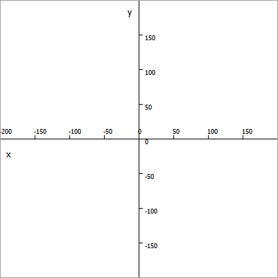
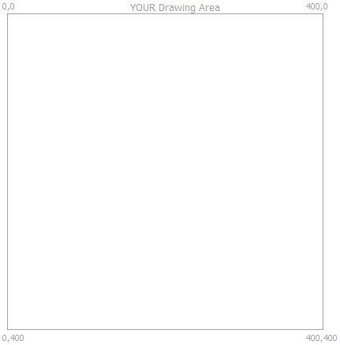

Chapter 01, Section 02, Exercise 020_ChangeX.cpp
Chapter 01, Section 02, Exercise 020_ChangeX.cpp
In this exercise, you will learn:
● How to change the x coordinate that controls the horizontal position for drawing on the runtime exercise draw area.
To do this exercise you need to know:
● How to load the fwc project in Qt Creator, and run it.
● What functions and parameters are. ( See Exercise 010_ChangeText.cpp )
What is the "x-axis"?
A long time ago, a 1337 hacker named Rene Descartes (pronounced: Reh Nay Day Cart) created something called the "Cartesian Coordinate System", which was later adapted into the kind of horizontal/vertical graph you are probably familiar with from algebra and geometry class. This Cartesian Coordinate thing looks like this:

It looks pretty straightforward, but at the time he created it, this wasn't commonly used! I'm not a historian (and not any big deal when it comes to mathematics either) so I don't know how in the heck people designed things back then, but it must have been pretty rough before guys like Descartes, Fermat, Newton, Liebniz and all these other math whizzes showed up and hacked science and engineering out of raw chunks of pure thought for the rest of us to use and enjoy!
So here in our drawing area, x starts at zero on the left side of the drawing area, and gets bigger as you move to the right. The right edge of your drawing area is 400. We're talking about the drawing area you see when you run fwc:

It turns out you can draw outside that box when fwc runs. The box exists to give you some reference perspective for when you are drawing things on the screen. Later on in your programming experience, you will draw on much bigger areas than that, but for now 400x400 is plenty of room to learn with.
In this exercise, you need to change the x parameter that is being passed to fwcDrawText() so that the text string change x shows up near the right edge of your drawing area, the way it does in the SOLN.
Just make a guess about what x should be, and run your program. It doesn't have to be exactly the same as the solution, the point is for you to get comfortable changing parameters in a function call, so you can see how to make the functions you use do the work you want them to do. The number we are looking to change here is 10. Since x gets bigger as it goes to the right edge of the drawing area, you want a number bigger than 10 but less than 400, which is the right edge.
Change 10 to the number you think is correct, and close the FeetWetCoding window, and then run FeetWetCoding again in Qt Creator by pressing the green run arrow.
When you've got x where you like it, you're done. Good job!
When you are done working on the exercise, or if you get stuck and can't figure it out, check the solution code, which lives one directory below your exercise code in the "Solutions" directory, and is named:
● 020_ChangeXSOLN.cpp
Always understand the SOLN code before you proceed to the next exercise!
When you are ready, you can proceed to 030_ChangeY.cpp.
documentation generated by HelpNDoc 3/24/2012 4:03 PM
FeetWetCoding version 0.2.2 released 2012Mar24 copyright (c) 2011,2012 Robert Holder, Janice Dugger.
...click the ZIP button on our Github page for the latest source!
Created with the Personal Edition of HelpNDoc: Easily create Web Help sites